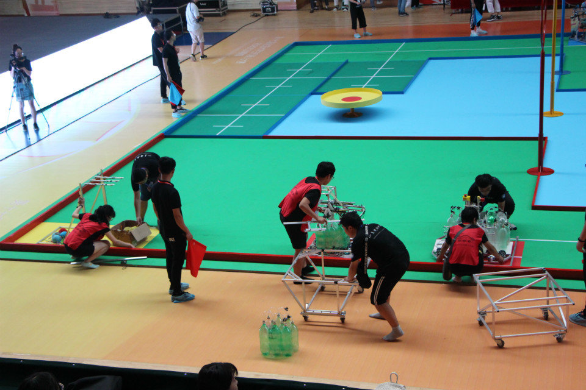
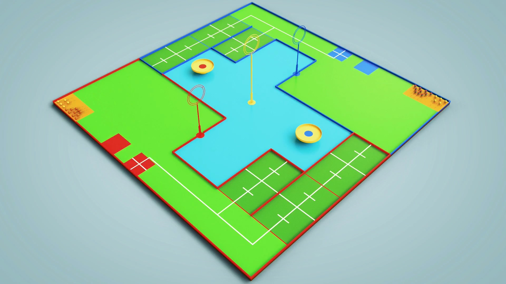
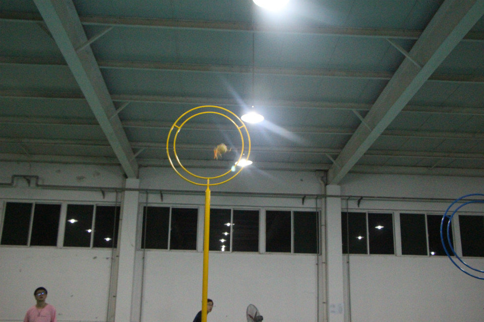
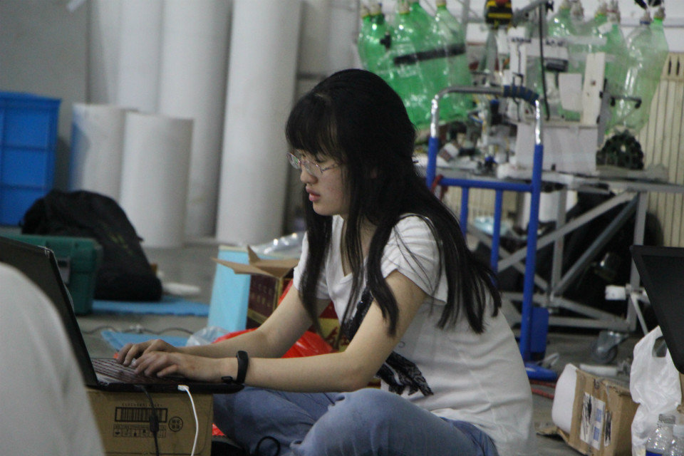

2018 ABU Robocon China Domestic Competition
Introduction for the ABU Robocon 2018
|

competition venue |

3D Simulation |
|

Stereo camera detection and recognition |

coding |
Goal identification